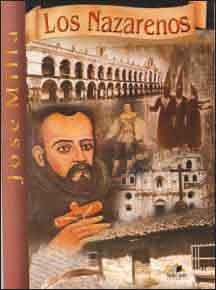

Los Nazarenos
José Milla y Vidaurre, también conocido por su pseudónimo Salomé Gil,
nació justo un año después de la independencia de Centroamérica,
en 1822, y murió en 1882. Sin embargo,
Los Nazarenos, al ser una novela histórica, se desarrolla
doscientos años antes, durante el siglo XVII,
en la ciudad que hoy conocemos como La Antigua Guatemala.
Esta novela relata la historia de una conjura
contra el Gobierno colonial español, cuyos organizadores se
hacen llamar Los Nazarenos; sin embargo,
no se buscaba la independencia,
sino un cambio en la administración colonial
para favorecer a una de las dos familias nobles y ricas
que se disputaban entre sí el poder local:
los Padilla y los Carranza.
Si deseas leer el libro "Los Nazarenos"
puedes hacerlo aquí
¡Espero que te guste!